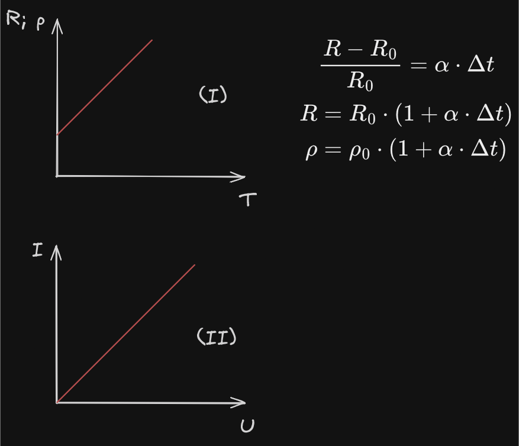

Dərs 19. Müxtəlif mühitlərdə elektrik cərəyanı.
Naqillər və metallar
- Elektrik cərəyanı yaxşı keçirən maddələrə Naqillər və ya Keçiricilər deyilir.
Metallar elektrik cərəyanını yaxşı keçirir.
Naqillərdə elektrik cərəyanı Elektronlar vasitəsilə yaranır.
Metallarda elektrik cərəyanın İstilik və Maqnit təsirləri müşahidə olunur.
Müqavimətin nisbi dəyişməsi temperaturla düz mütənasibdir:

(II) - VAX (Volt - Amper xarakteristikası)
(
(
(
Müqavimətin temperatur əmsalı
- Müqavimətin temperatur əmsalı -
Müqavimətin temperatur əmsalı yalnız Materialdan asılıdır. Onun vahidi:
İfrat keçiricilik
- Metal naqilləri soyudan zaman çox aşağı temperaturlarda müqavimətin birdən - birə sıfıra düşməsi hadisəsinə İfrat keçiricilik adlanır.
İfrat keçiricilərdə müqavimət sıfıra düşdüyünə görə İstilik ayrılmır, cərəyanın yalnız Maqnit təsiri müşahidə olunur.
Əgər ifrat keçiricilik yüksək temperaturda baş versəydi, onda naqillərdə enerji itkisi az olardı.
Çox güclü maqnit sahəsi ifratkeçiriciliyi poza bilir.
Elektrolitlər
Elektroliklərdə elektrik cərəyanı Müsbət və Mənfi ionlar vasitəsilə yaranır.
Elektrolitlərdə cərəyanın hər üç təsiri müşahidə olunur: İstilik, Maqnit, Kimyəvi.
Elektrolitlərdə
Elektroliz
- Elektrolitdən elektrik cərəyanı keçən zaman elektrodlar üzərində maddə ayrılmasına Elektroliz deyilir.
Elektroliz zamanı Maddə daşınması və ya yük daşınması baş verir.
Elektrolizdən Maddələrin aşqarlardan təmizlənməsinə istifadə olunur.
Elektroliz zamanı elektrod üzərində ayrılan maddənin kütləsi cərəyan şiddəti ilə düz mütənasibdir.
Elektroliz üçün Faradeyin I qanunu
(
- Elektrokimyəvi ekvivalent - Elektrikdən
Qazların xassələri
Qazlar adi halda Dielektrikdirlər. Qazlarda elektrik cərəyanı Müsbət, Mənfi ionlar və Elektronlar vasitəsilə yaranır. Qazlarda cərəyanın İstilik, Maqnit və Kimyəvi təsirləri müşahidə olunur.
- Qazlardan elektrik cərəyanı keçməsinə Qaz boşalması deyilir.
Qaz boşalması Müstəqil və Qeyri - müstəqil olmaqla 2 yerə bölünür.
-
İonlaşdırıcının təsirilə baş verən qaz boşalmasına Qeyri - müstəqil qaz boşalması deyilir.
-
İonlaşdırıcının təsiri kəsildikdən sonra baş verən qaz boşalmasına Müstəqil qaz boşalması deyilir.
Müstəqil qaz boşalması zamanı katoddan qopan elektronlar anoda doğru hərəkət edir. Elektronlar arasında gərginlik artdıqca elektronların kinetik enerjisi də artır, onlar qarşılarına çıxan neytral atom və molekullarla toqquşaraq onları zərbə ilə ionlaşdırır.
Elektronların sərbəst yoldakı kinetik enerjisi aşağıdakı kimi təyin olunur:
(
Müstəqil qaz boşalmasının baş verməsi üçün
Ümumi olaraq ionlaşma enerjisi (
Müstəqil qaz boşalmasının növləri
-
Alovsuz boşalma - Aşağı təzyiqlərdə (
ü -
Qığılcım boşalması - Havada elektrodlar arasında yüksək gərginlik olduqda baş verir. Qığılcımlı boşalmaya ildirımı göstərmək olar.
-
Qövs boşalması (elektrik gövsü) - Atmosfer təzyiqində və
-
Tac boşalması - Normal atmosfer təzyiqində güclü elektrik sahəsinin təsiri ilə elektrik yükünə malik naqillərin iti ucları yaxınlığında baş verən qaz boşalmasıdır. Tac boşalması yüksək gərginlik xətlərinin yaxınlığında tac formasında müşahidə olunur.
Qazların volt - amper xaraktresitikası

(OB) - Qeyri - müstəqil qaz boşalması
(BC) - Müstəqil qaz boşalması
(AB) - Doyma cərəyanı
(
(
Plazma
- Plazma maddənin IV aqreqat halı olub, qismən və ya tam ionlaşmış qazdır.
Plazma keçiricidir, müsbət və mənfi yüklərin sıxlığı eyni olur. Qızdırma, şüalandırma, və s. yollarla alınır. Alçaq temperaturlu və yüksək temperaturlu olur.
Plazmanın ionlaşma dərəcəsi
- İonlaşmış atomların sayının ümumi atomların sayına olan nisbətinə Plazmanın ionlaşma dərəcəsi deyilir.
(
(
Yarımkeçiricilər
Donor aşqarlar
- Öz elektronlarını asanlıqla verən və sərbəst elektronlarının sayını artıra bilən aşqarlara Donor aşqarlar deyilir.
Donor aşqarlar n - tip (negative) yarımkeçiriciliyə malikdirlər. Onarda əsas yükdaşıyıcılar Elektronlar, qeyri - əsas yükdaşıyıcılar isə Deşiklərdir.
Akseptor aşqarlar
- Deşiklərin sayı elektronların sayından çox olan aşqarlar Akseptor aşkarlar deyilir.
Akseptor aşqarlar p - tip (positive) yarımkeçiriciliyə malik olur. Onlarda əsas yükdaşıyıcılar Deşiklər, qeyri - əsas yükdaşıyıcılar isə Elektronlardır.
Məxsusi keçiricilik
- Aşqarsız yarımkeçiricilərin keçiriciliyinə Məxsusi keçiricilik adlanır. Onlar həm Elektron (n - tip), həm də Deşik (p - tip) yarımkeçiriciliyə malikdirlər.
Vakkum cihazları
1. Elektron şüa borusu
- Elektrik siqnallarının işıq siqnallarına çevrilməsində istifadə olunur.
İş prinsipi əsasən Termoelektron emissiyasına əsaslanır.
2. Vakkum diodu (iki elektrodlu elektron lampası)
- Dəyişən cərəyanı düzləndirmək üçün işlədilir.
İş prinsipi Termoelektron emissiyasına əsaslanır.
(k.t) - Közərmə teli
3. Triod (üç elektrodlu elektron lampası)
- Elektromaqnit rəqslərini gücləndirmək üçün işlədilir.
İş prinsipi Termoelektron emissiyasına əsaslanır.
Termoelektron emissiya
- Yüksək temperatura kimi qızmış maddələrdən elektronların qopmasına Termoelektron emissiya deyilir.
Vakkumda elektrik cərəyanını termoelektron emissiyası nəticəsində katoddan qopan Elektronlar yaradır.
Yarımkeçirici cihazlar
1. Tranzistor (yarımkeçirici triod)
- Elektromaqnit rəqslərinin alınması və gücləndirilməsi üçün işlədilir.
İş prinsipi p - n keçidinə əsaslanır.
Emitter, Baza, Kollektor olmaqla 3 hissədən ibarətdir:
2. Yarımkeçirici diod
- Dəyişən cərəyanı düzləndirmək üçün istifadə olunur.
İş prinsipi Birtərəfli p - n keçidinə əsaslanır.
3. Fotorezistor
- Zəif işıq selini ölçür və ya qeydə alır.
İş prinsipi Yarımkeçiricilərin müqavimətində işığın təsiri ilə dəyişməsinə əsaslanır.
4. Termistor və ya Termorezistor
- Uzaq məsafədən temperaturu ölçür, yanğın zamanı siqnal ötürmədə istifadə olunur.
İş prinsipi Yarımkeçiricilərin müqavimətinin temperaturdan asılı olaraq dəyişməsinə əsaslanır.
Elektroliz zamanı sərf olunan enerji aşağıdakı kimidir:
Qeyri - əsas yükdaşıyıcılar yaradırsa, n - p (tərs keçid) olur.
Əsas yükdaşıyıcılar yaradırsa, p - n (düz keçid) olur.
Resistorlar Naqil kimi hesab olunur.